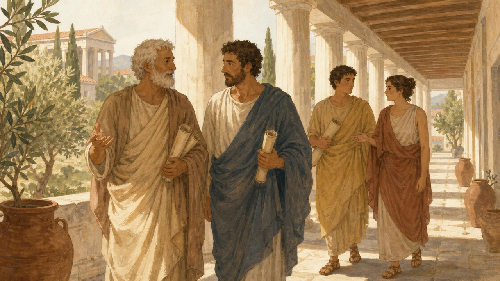
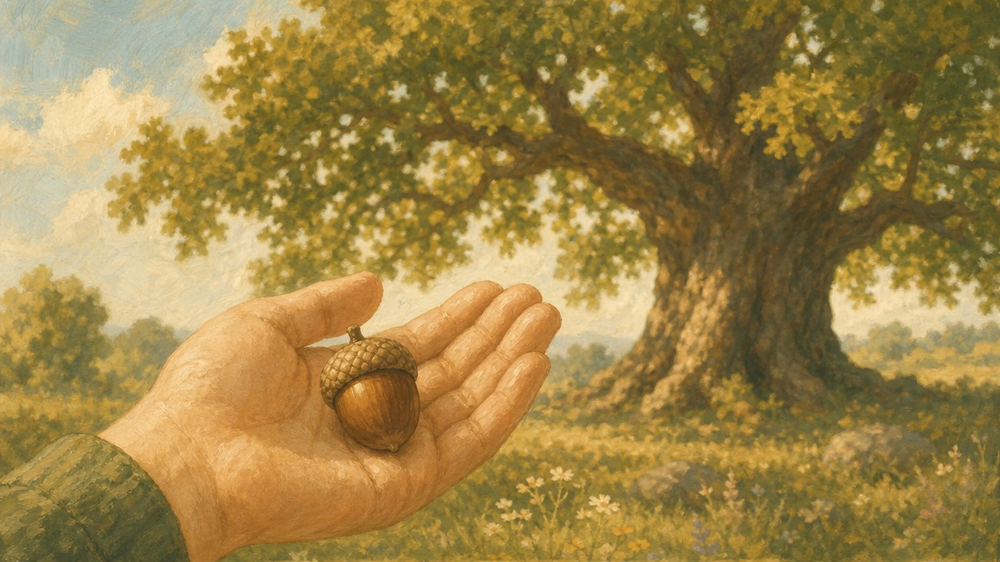
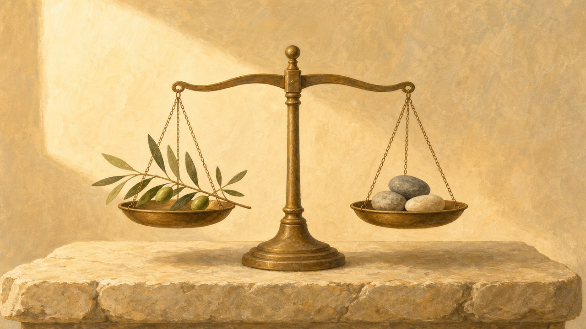

Opowiadanie o życiu i hasłach Arystotelesa.
O tym, jak używać ich w zwykłym dniu.
I o pytaniach, na które nikt nie zna odpowiedzi.
Dla Maksymiliana
Tekst jest napisany prostym językiem. Zdania są krótkie. Jedno zdanie mówi jedną rzecz.
Każde trudne słowo jest wyjaśnione zaraz po tym, jak się pojawi. Wszystkie trudne słowa są jeszcze raz zebrane w słowniczku na końcu.
Rozdziałów jest trzydzieści siedem. Każdy zaczyna się na nowej stronie. Można czytać po jednym rozdziale dziennie. Nie trzeba czytać wszystkiego naraz.
Na końcu jest 45 pytań. Pytania są w czterech grupach. Grupa mówi, jakiej odpowiedzi można się spodziewać. W grupie D są pytania, na które nikt nie zna odpowiedzi. To nie jest błąd.
Rajmund miał osiemnaście lat. Mieszkał w małym mieście. Lubił porządek. Lubił wiedzieć, co będzie dalej. Nie lubił niespodzianek. Miał w pokoju półkę z książkami. Książki stały według wielkości. Rajmund miał też zeszyt. W zeszycie zapisywał pytania. Pytań było bardzo dużo. Niektóre pytania były łatwe. Na przykład: dlaczego woda wrze. Na to pytanie znalazł odpowiedź w książce. Niektóre pytania były trudne. Na przykład: dlaczego ludzie kłamią. Na to pytanie odpowiedzi było kilka. Ale były też pytania, na które nikt mu nie odpowiedział. Rajmund miał chorą babcię. Babcia leżała w szpitalu. Rajmund pytał lekarza: kiedy babcia wyzdrowieje. Lekarz mówił: nie wiem. Rajmund pytał mamę: czy babcia wyzdrowieje. Mama mówiła: nie wiem. Rajmund pytał znowu: to o której godzinie się dowiemy. Mama znowu mówiła: nie wiem. Rajmund bardzo się wtedy złościł. Nie złościł się na mamę. Złościł się na to „nie wiem”. To „nie wiem” było jak dziura w podłodze. Rajmund chciał, żeby ktoś tę dziurę zakrył. Chciał daty. Chciał godziny. Chciał pewności. To jest opowiadanie o tym, co Rajmund z tym zrobił.
Był deszczowy dzień. Rajmund wszedł na strych. Na strychu stało pudło. W pudle leżała stara książka. Książka nie miała okładki. Papier był pożółkły. Na pierwszej stronie było jedno zdanie. Zdanie brzmiało tak: „Wszyscy ludzie z natury dążą do poznania”. Rajmund przeczytał je raz. Potem drugi raz. Potem trzeci. Zdanie było dziwne, ale miłe. Znaczyło mniej więcej tyle: każdy człowiek chce wiedzieć. Rajmund pomyślał, że to prawda. On też chciał wiedzieć. Chciał wiedzieć bardzo mocno. Wtedy zrobiło się jasno. Strych zniknął. Rajmund stał na ścieżce. Ścieżka była z białych kamieni. Było ciepło. Pachniało ziołami i morzem. W dole leżało miasto z białymi kolumnami. Rajmund nie krzyknął. Najpierw zawsze patrzył. Krzyczał dopiero później, jeśli było trzeba. Ścieżką szedł mężczyzna. Miał prostą, wełnianą szatę. Miał krótką brodę. Miał zakurzone sandały. Niósł drewnianą tabliczkę do pisania. Zatrzymał się przy Rajmundzie. Popatrzył na niego spokojnie. „Nie jesteś stąd” — powiedział. „Nie jestem” — powiedział Rajmund. „To dobrze” — powiedział mężczyzna. „Ludzie z daleka zadają lepsze pytania.” „Nazywam się Arystoteles.” „Idę na spacer.” „Chodź ze mną.” „Ja najlepiej myślę, kiedy idę.”
Szli powoli. Arystoteles zaczął opowiadać o sobie. Urodził się w mieście Stagira. Stagira leżała na północy Grecji. Urodził się w roku 384 przed naszą erą. To było bardzo dawno temu. To było ponad dwa tysiące lat temu. Jego ojciec nazywał się Nikomach. Nikomach był lekarzem. Był lekarzem króla Macedonii. Mały Arystoteles patrzył, jak ojciec pracuje. Zobaczył coś ważnego. Lekarz nie może zgadywać. Lekarz musi najpierw dokładnie obejrzeć chorego. Potem musi pomyśleć. Dopiero potem może działać. Ten porządek został Arystotelesowi na całe życie. Najpierw patrz. Potem myśl. Potem rób. Rodzice Arystotelesa umarli, gdy był chłopcem. Wychowywał go krewny. Krewny nazywał się Proksenos. „To musiało być smutne” — powiedział Rajmund. „Było smutne” — powiedział Arystoteles. „Smutek jest częścią życia.” „Nie ma sensu udawać, że go nie ma.” „Ważne jest tylko to, co z nim zrobisz.” Kiedy Arystoteles miał siedemnaście lat, pojechał do Aten. Ateny były wtedy najważniejszym miastem dla ludzi, którzy chcą się uczyć. Poszedł do szkoły, która nazywała się Akademia. Akademię prowadził Platon. Platon był bardzo sławnym filozofem. Filozof to człowiek, który szuka mądrości. Słowo „filozofia” znaczy dosłownie „miłość mądrości”.
Arystoteles został w Akademii dwadzieścia lat. To bardzo długo. Najpierw był uczniem. Potem sam badał i uczył innych. Platon go lubił. Platon mówił, że Arystoteles jest umysłem szkoły. Mówił też coś śmiesznego. Mówił, że Arystoteles potrzebuje wodzy, a nie bata. To znaczy: nie trzeba go było popędzać. Czasem trzeba go było hamować. „Kochałem Platona” — powiedział Arystoteles. „Był najlepszym nauczycielem, jakiego mogłem mieć.” „A mimo to musiałem się z nim nie zgodzić.” Rajmund stanął. To go zdziwiło. „Można nie zgadzać się z kimś, kogo się lubi?” — zapytał. „Można” — powiedział Arystoteles. „Czasem trzeba.” „Ludzie zapamiętali z tego jedno zdanie.” „Platon jest mi drogi, ale prawda jest mi droższa.” To jest pierwsze hasło w tym opowiadaniu. Wyjaśnijmy je dokładnie. Ono nie znaczy: kłóć się ze wszystkimi. Ono nie znaczy: nie szanuj nauczycieli. Ono znaczy tyle: szanuję cię i jestem ci wdzięczny. Ale jeśli widzę, że coś jest inaczej, powiem to. Prawda jest ważniejsza niż to, żeby ktoś był ze mnie zadowolony. Gdzie tego użyć? W szkole, gdy kolega mówi coś nieprawdziwego. W domu, gdy ktoś się pomylił w liczbach. W internecie, gdy sławny człowiek podaje fałszywą informację. Jak tego użyć? Spokojnie i grzecznie. Mówisz: szanuję cię, ale tu chyba jest błąd. Pokazujesz, skąd wiesz. Nie krzyczysz. Czy to pomaga? Tak. Bo dzięki temu można się nie zgadzać i dalej być w dobrych stosunkach.
Platon uważał tak. Prawdziwy świat to świat idei. Idea to doskonały wzór rzeczy. Według Platona gdzieś istnieje idealne krzesło. A krzesło w twoim pokoju to tylko jego cień. Arystoteles uważał inaczej. „Ja lubię krzesła, które skrzypią” — powiedział. „Lubię psy, które gubią sierść.” „Lubię ryby, które można policzyć.” Dla Arystotelesa naprawdę istnieje to, co konkretne. Ten pies. To drzewo. Ten człowiek. Wzór nie mieszka w osobnym świecie. Wzór mieszka w samej rzeczy. Tak jak kształt mieszka w glinie. To brzmi jak spór o nic. Ale to nie jest spór o nic. Ten spór zmienia sposób patrzenia. Człowiek Platona pyta: jaka jest idea odwagi. Człowiek Arystotelesa pyta: co dokładnie zrobił wczoraj ten odważny człowiek. Gdzie tego użyć? Wtedy, gdy ktoś mówi wielkie słowa o „ludziach” albo o „młodzieży”. Możesz wtedy zapytać: o kim dokładnie mówisz. Wielkie słowa łatwo powiedzieć. Konkret trzeba sprawdzić. Czy to pomaga? Tak. Bo konkret trudniej przekręcić niż ogólnik.
Platon umarł. Arystoteles nie został szefem Akademii. Wybrano kogoś innego. „Czy było ci przykro?” — zapytał Rajmund. „Było” — odpowiedział Arystoteles. „Ale nie zostałem w miejscu, w którym nie było już dla mnie pracy.” Wyjechał z Aten. Mieszkał w mieście Assos. Potem mieszkał na wyspie Lesbos. Tam robił coś, co bardzo lubił. Siedział nad wodą i patrzył. Patrzył na ryby. Patrzył na ośmiornice. Patrzył na muszle i owady. Rozcinał je. Rysował je. Opisywał, jak wyglądają w środku. Zbadał setki gatunków zwierząt. Niektórzy się z niego śmiali. Mówili, że wielki myśliciel grzebie w rybach. Arystoteles odpowiadał im jednym zdaniem. „W każdej rzeczy z przyrody jest coś zdumiewającego.” To jest drugie hasło. Ono znaczy tyle: nie ma nudnych tematów. Jest tylko za krótkie patrzenie. Kiedy patrzysz na coś długo, zaczyna to być ciekawe. Gdzie tego użyć? Gdy masz zadanie, które wydaje się nudne. Popatrz na nie dłużej niż zwykle. Poszukaj w nim jednej rzeczy, której nie rozumiesz. Wtedy zadanie robi się ciekawsze. Czy to pomaga? Tak. Nuda często znika, gdy zwiększysz uwagę.
Potem wezwał Arystotelesa król Filip z Macedonii. Filip miał syna. Syn miał trzynaście lat. Syn nazywał się Aleksander. Arystoteles został jego nauczycielem. Uczył go kilka lat. Czytali razem Homera. Rozmawiali o odwadze. Rozmawiali o państwie. Rozmawiali o przyjaźni. Rozmawiali o tym, co znaczy być dobrym człowiekiem. Ten uczeń stał się później sławny. To był Aleksander Wielki. Podbił ogromne tereny. „Czy jesteś z niego dumny?” — zapytał Rajmund. Arystoteles milczał chwilę. Potem odpowiedział szczerze. „Jestem dumny z tego, czego go nauczyłem.” „I jest mi smutno z powodu tego, czego nie zdołałem.” „Nauczyciel sieje ziarno.” „Ale nauczyciel nie rządzi pogodą.” To ważne zdanie. Ono znaczy tyle: możesz komuś dać dużo dobrego. Ale nie decydujesz o jego życiu. Każdy człowiek wybiera sam. Gdzie tego użyć? Gdy pomagasz komuś, a on i tak robi po swojemu. Wtedy nie jesteś winny. Zrobiłeś swoją część. Czy to pomaga? Tak. Chroni przed poczuciem winy za cudze decyzje.

Arystoteles wrócił do Aten. Miał wtedy około pięćdziesięciu lat. Założył własną szkołę. Nazwał ją Likejon. Nazwa pochodziła od gaju boga Apollina. Szkoła miała bibliotekę. Miała zbiory zwierząt i roślin. Miała mapy. Miała bardzo dużo zwojów z tekstami. W szkole był kryty krużganek. Krużganek to długie przejście z dachem i kolumnami. Po grecku nazywał się perypatos. To znaczy: miejsce do chodzenia. Uczniowie chodzili tam i rozmawiali. Dlatego nazwano ich perypatetykami. To znaczy: ci, którzy myślą, spacerując. Rajmundowi bardzo się to spodobało. On też lepiej myślał w ruchu. „Ruch pomaga głowie” — powiedział Arystoteles. „Kiedy ciało idzie, myśl też przestaje stać.” W Likejonie robiono coś nowego. Zbierano wiedzę wspólnie. Jedni opisywali ustroje państw. Inni opisywali rośliny. Inni zwierzęta. Inni gwiazdy. Arystoteles pisał o logice. Pisał o przyrodzie. Pisał o duszy. Pisał o pamięci i o snach. Pisał o dobrym życiu. Pisał o państwie. Pisał o sztuce i o mówieniu. „Jak można znać się na tylu rzeczach?” — zapytał Rajmund. „Nie znałem się na wszystkim” — powiedział Arystoteles. „Ale wiedza jest jednym domem.” „Nie jest zbiorem osobnych szop.” I dodał trzecie hasło. „Nauka zaczyna się od zdziwienia.” Kto się niczemu nie dziwi, ten niczego nie odkryje.
„To zdanie z twojej księgi jest moje” — powiedział Arystoteles. „Wszyscy ludzie z natury dążą do poznania.” Rajmund poprosił o wyjaśnienie. Nie chciał udawać, że rozumie. „Dobrze robisz” — powiedział Arystoteles. „Nigdy nie udawaj, że rozumiesz.” „Udawanie jest najkrótszą drogą do głupoty.” To hasło znaczy tak. Ciekawość nie jest dodatkiem do człowieka. Ciekawość jest częścią człowieka. Tak jak skrzydła są częścią ptaka. Widać to po drobnych rzeczach. Lubimy patrzeć, nawet gdy nic z tego nie mamy. Lubimy słuchać nowych dźwięków. Lubimy dotykać nowych rzeczy. Dziecko rozkłada zabawkę na części. Nie robi tego ze złości. Robi to, bo chce zobaczyć, co jest w środku. „Jeśli ktoś mówi, że męczysz go pytaniami, to znaczy jedno” — powiedział filozof. „Jemu jest niewygodnie.” „To nie znaczy, że twoje pytanie jest złe.” Gdzie tego użyć? Wtedy, gdy nie rozumiesz jednego kroku w zadaniu. Wtedy warto zapytać od razu. Wtedy, gdy ktoś podaje liczbę w internecie. Warto zapytać, skąd ją wziął. Wtedy, gdy słyszysz plotkę. Warto zapytać, kto to widział. Czy to pomaga? Bardzo. Ciekawość jest lekarstwem na nudę. Tego lekarstwa nie trzeba kupować. Ale jest jedno ostrzeżenie. Sama ciekawość to za mało. Ciekawość bez porządku zamienia się w gadanie. Dlatego Arystoteles pokazał Rajmundowi narzędzia. Narzędzia do porządkowania myśli.
„Pokaż mi jakąś rzecz” — poprosił Arystoteles. Rajmund wyjął z kieszeni drewniany ołówek. „Bardzo dobrze” — powiedział filozof. „Zadam teraz cztery pytania.” „Te cztery pytania pasują prawie do wszystkiego.” „Nazywam je czterema przyczynami.” Przyczyna to powód, dla którego coś jest takie, jakie jest. Pierwsze pytanie brzmi: z czego to jest. To jest przyczyna materialna. Materia to tworzywo. Ołówek jest z drewna, z grafitu i z lakieru. Drugie pytanie brzmi: jaki to ma kształt i układ. To jest przyczyna formalna. Forma to układ, który robi z materii konkretną rzecz. Dzięki formie drewno jest ołówkiem, a nie stosem wiórów. Trzecie pytanie brzmi: kto to zrobił. To jest przyczyna sprawcza. Sprawca to ten, kto wprawia coś w ruch albo w istnienie. Ołówek zrobiła maszyna i człowiek przy maszynie. Czwarte pytanie brzmi: po co to jest. To jest przyczyna celowa. Cel po grecku nazywa się telos. Ołówek jest po to, żeby zostawiać ślad, który da się zetrzeć. „Te cztery pytania to narzędzie” — powiedział Arystoteles. „Narzędzie jest jak młotek.” „Można je przyłożyć do wielu rzeczy.” Rajmund spróbował od razu. Przyłożył je do kłótni z kolegą. Kłótnia była wczoraj. Materia kłótni: kilka ostrych zdań. Forma kłótni: podniesiony głos i zła mina. Sprawca: on sam, bo zaczął. Cel: chciał, żeby kolega przyznał mu rację. „Czy osiągnąłeś ten cel?” — zapytał Arystoteles. „Nie” — powiedział Rajmund. „Kolega się obraził.” „To znaczy, że cel był dobry, a środek zły” — powiedział filozof. „To jest najczęstszy błąd ludzi.” Gdzie użyć czterech pytań? Przy nauce. Można zapytać: po co uczę się tego tematu. Przy zakupach. Można zapytać: z czego to jest zrobione. Przy własnych decyzjach. Można zapytać: jaki jest mój prawdziwy cel. Czy to pomaga? Tak. Bo bardzo dużo zamieszania bierze się z mylenia celu ze środkiem.

Arystoteles podniósł z ziemi żołądź. Położył go na dłoni. „Co to jest?” — zapytał. „Żołądź” — powiedział Rajmund. „Tak” — powiedział filozof. „A czy to jest dąb?” Rajmund pomyślał chwilę. „Jeszcze nie.” „Bardzo dobra odpowiedź” — ucieszył się Arystoteles. „To jest dąb w możności.” Możność to zdolność do stania się czymś. Po grecku mówi się na to dynamis. „A duże drzewo za nami to dąb w akcie.” Akt to stan, w którym coś już jest tym, czym miało być. Po grecku mówi się na to energeia. Żołądź może stać się dębem. Ale kamień nie może stać się dębem. To jest ważna różnica. Nie wszystko jest możliwe. Ale bardzo wiele jest możliwe. Arystoteles miał jeszcze jedno słowo. To słowo brzmi: entelechia. Entelechia to coś, co ma już w sobie swój cel. Żołądź nosi w sobie plan dębu. Nikt nie musi mu go wkładać z zewnątrz. Gdzie tego użyć w życiu? Wtedy, gdy patrzysz na siebie. Nie jesteś jeszcze wszystkim, czym możesz być. To nie jest wada. To jest możność. Umiejętność, której nie masz dziś, możesz mieć za rok. Ale nie zdobędziesz jej samym chceniem. Żołądź też nie staje się dębem w jeden dzień. Potrzebuje ziemi, wody i czasu. Człowiek potrzebuje ćwiczenia, pomocy i czasu. Czy to pomaga? Tak. To zdejmuje z człowieka presję. Nie musisz umieć wszystkiego dziś. Musisz tylko iść w dobrą stronę.
„Najważniejsze z moich pojęć to telos” — powiedział Arystoteles. Telos to cel. Ale nie taki cel jak tarcza do strzelania. To raczej stan, do którego coś zmierza. Nóż ma swój telos. Nóż jest po to, żeby dobrze kroić. Oko ma swój telos. Oko jest po to, żeby dobrze widzieć. Nóż, który nie kroi, jest złym nożem. Oko, które nie widzi, jest chorym okiem. Arystoteles pytał dalej. A jaki jest telos człowieka? Do czego zmierza życie ludzkie? Do pieniędzy? Nie, bo pieniądze są tylko środkiem. Za pieniądze coś się kupuje. Więc pieniądze są dla czegoś innego. Do przyjemności? Też nie. Przyjemność jest miła, ale szybko mija. Do sławy? Też nie. Sława zależy od innych ludzi, a nie od ciebie. „Więc do czego?” — zapytał Rajmund. „Do eudajmonii” — powiedział Arystoteles. „Ale o tym opowiem ci później.” „Najpierw musimy pogadać o czymś trudniejszym.” „Widzę, że nosisz w sobie trudne pytanie.” Rajmund poczuł ucisk w gardle. Bo to była prawda.
Usiedli na kamiennym murku. Było cicho. „Moja babcia jest chora” — powiedział Rajmund. „Leży w szpitalu.” „Pytam lekarza, kiedy wyzdrowieje.” „Lekarz mówi, że nie wie.” „Pytam mamę, czy babcia wyzdrowieje.” „Mama mówi, że nie wie.” „Ja nie rozumiem tego nie wiem.” „Przecież lekarz się uczył.” „Przecież ktoś musi wiedzieć.” „Chcę tylko datę.” „Chcę godzinę.” „Wtedy będę spokojny.” Arystoteles pokiwał głową. Nie powiedział, że Rajmund przesadza. Nie powiedział, żeby się nie martwił. „To jest dobre pytanie” — powiedział. „I zasługuje na porządną odpowiedź.” „Zajmę się nim dokładnie.” „Bo to jest jedno z najtrudniejszych pytań na świecie.”
„Podzielę świat na dwie części” — powiedział Arystoteles. „To bardzo stary podział.” „I bardzo pomocny.” Pierwsza część to rzeczy konieczne. Konieczne znaczy: nie mogą być inaczej. Dwa plus dwa to zawsze cztery. Trójkąt zawsze ma trzy boki. Jutro po dniu przyjdzie noc. Tego nie da się zmienić. Tu można mieć pewność. Tu odpowiedzi są jednoznaczne. Druga część to rzeczy przygodne. Przygodne to trudne słowo. Znaczy ono: mogą być tak albo inaczej. Jutro może padać deszcz albo nie. Kolega może oddzwonić albo nie. Chory człowiek może wyzdrowieć albo nie. Tu nie ma pewności. Nie dlatego, że ktoś jest głupi. Nie dlatego, że ktoś ukrywa prawdę. Tylko dlatego, że sama rzecz jeszcze nie jest rozstrzygnięta. „Zapamiętaj to zdanie” — powiedział Arystoteles. „Brak odpowiedzi nie zawsze jest brakiem wiedzy.” „Czasem jest to prawda o samej rzeczy.” Rajmund poprosił, żeby powiedzieć to jeszcze raz. Arystoteles powtórzył spokojnie. „Lekarz nie chowa przed tobą daty w szufladzie.” „Ta data jeszcze nie istnieje.” „Nikt jej nie zna, bo nie ma czego znać.” „Ona dopiero się tworzy.” Rajmund milczał długo. Potem powiedział: „To znaczy, że lekarz nie kłamie.” „Nie kłamie” — powiedział Arystoteles. „Mówi ci prawdę o tym, jak wygląda świat.”
„Napisałem kiedyś o tym cały rozdział” — powiedział Arystoteles. „Podałem przykład bitwy morskiej.” Wyobraź sobie takie zdanie. „Jutro odbędzie się bitwa morska.” Czy to zdanie jest dziś prawdziwe? Czy jest dziś fałszywe? Rajmund pomyślał. „Nie wiem.” „I to jest właśnie odpowiedź” — powiedział Arystoteles. „Ono jeszcze nie jest ani prawdziwe, ani fałszywe.” „Stanie się jedno z dwóch dopiero jutro.” Rajmund zmarszczył czoło. To było dziwne. Ale też trochę ulga. „Czyli przyszłość naprawdę nie jest gotowa?” — zapytał. „Nie jest gotowa” — powiedział filozof. „Przyszłość nie leży w zamkniętym pudełku.” „Ona się dopiero robi.” „Robi się z tego, co dzieje się teraz.” Dlatego nie da się jej odczytać. Nie da się jej wyliczyć jak wyniku dodawania. To samo dotyczy zdrowia. Zdanie „babcia wyzdrowieje w piątek” nie ma dziś odpowiedzi. Nie dlatego, że pytanie jest złe. Dlatego, że odpowiedź jeszcze nie powstała. Gdzie tego użyć? Wtedy, gdy chcesz od kogoś daty, a on jej nie ma. Możesz sobie wtedy powiedzieć jedno zdanie. „To jest zdanie o jutrze.” „Ono jeszcze nie ma odpowiedzi.” Czy to pomaga? Wielu ludziom pomaga bardzo. Bo złość na człowieka zmienia się w spokojną wiedzę o świecie.
„Mam jeszcze jedno hasło dla ciebie” — powiedział Arystoteles. „To jedno z moich najważniejszych.” „Nie od każdej dziedziny wolno wymagać tej samej dokładności.” Rajmund poprosił o przykład. Arystoteles podał trzy. W matematyce można żądać dokładnego wyniku. Wynik jest jeden i jest pewny. W medycynie tak nie jest. Ciało każdego człowieka jest trochę inne. Lekarz mówi więc: zwykle, na ogół, u większości. W sprawach ludzkich jest jeszcze mniej pewności. Nie wiadomo, co ktoś zrobi jutro. „Człowiek wykształcony rozpoznaje, ile ścisłości można żądać” — powiedział filozof. To znaczy tyle. Mądry człowiek nie żąda dokładnej daty od lekarza. Bo wie, że medycyna nie jest matematyką. To nie znaczy, że lekarz jest słaby. To znaczy, że choroba jest inną rzeczą niż działanie. Rajmund powtórzył to na głos, żeby zapamiętać. „Od matematyki żądam wyniku.” „Od lekarza żądam najlepszej wiedzy i uczciwości.” „Ale nie żądam daty, bo daty nie ma.” „Dokładnie tak” — powiedział Arystoteles. Gdzie tego użyć? Przy każdym pytaniu o przyszłość. Przy pytaniach o czyjeś uczucia. Przy pytaniach o pogodę, o wyniki, o zdrowie. Czy to pomaga? Tak. Bo przestajesz czekać na coś, czego nie ma. I zaczynasz brać to, co jest.
„Ale to jeszcze nie koniec” — powiedział Arystoteles. „Nie zostawię cię z samym nie wiem.” „Nie wiem to jest dopiero początek.” „Zaraz po nim idzie to, co wiadomo.” Bo prawie zawsze coś wiadomo. Rzadko nie wiadomo zupełnie nic. Zamiast daty można podać cztery rzeczy. Pierwsza rzecz to stan obecny. Można powiedzieć, jak babcia czuje się dzisiaj. Można powiedzieć, co pokazały badania. Druga rzecz to plan. Można powiedzieć, jakie leki dostaje. Można powiedzieć, co lekarze zrobią dalej. Trzecia rzecz to następny punkt sprawdzenia. Można powiedzieć: badanie będzie w środę. Można powiedzieć: wtedy będziemy wiedzieć więcej. Czwarta rzecz to widełki. Widełki to przedział od do. Można powiedzieć: takie leczenie trwa zwykle od dwóch do sześciu tygodni. To nie jest data. Ale to jest jakiś kształt czasu. Rajmund poczuł, że to mu pomaga. Nie miał daty. Ale miał plan i termin następnej wiadomości. „Zapamiętaj trzy pytania” — powiedział Arystoteles. „Pytaj: co wiadomo dzisiaj.” „Pytaj: co będzie dalej robione.” „Pytaj: kiedy dowiemy się czegoś nowego.” Te trzy pytania mają odpowiedzi. Pytanie o dokładną datę wyzdrowienia nie ma. Gdzie tego użyć? W szpitalu. W szkole, gdy czekasz na wynik. W urzędzie, gdy czekasz na decyzję. Czy to pomaga? Bardzo. Bo dostajesz konkret zamiast pustki.
Rajmund powiedział jeszcze jedną rzecz. „Kiedy słyszę nie wiem, robi mi się gorąco w środku.” „Chce mi się krzyczeć.” „Czasem krzyczę.” „Potem jest mi wstyd.” Arystoteles nie zrobił zdziwionej miny. „To normalne” — powiedział. „Ty nie złościsz się na mamę.” „Ty złościsz się na niepewność.” „To bardzo trudne uczucie.” „Ono jest jak swędzenie, którego nie można podrapać.” Potem podał radę. Rada ma trzy części. Pierwsza część to nazwanie. Powiedz sobie: teraz czuję niepewność. Samo nazwanie trochę zmniejsza napięcie. Druga część to podział. Podziel sprawę na dwie kupki. Na jedną kupkę połóż to, na co masz wpływ. Na drugą to, na co wpływu nie masz. Na wyzdrowienie babci nie masz wpływu. Na swój telefon do babci masz wpływ. Na to, czy zrobisz jej rysunek, masz wpływ. Trzecia część to działanie. Zrób jedną rzecz z pierwszej kupki. Choćby małą. Rajmund pomyślał, że narysuje babci dąb. „To jest dobre” — powiedział Arystoteles. „Bo ręce, które coś robią, uspokajają głowę.” Gdzie tego użyć? Zawsze, gdy czekasz na coś ważnego. Czy to pomaga? Tak. Nie usuwa lęku do końca. Ale zmniejsza go tak, że da się z nim żyć.
„Powiedziałem kiedyś zdanie o nadziei” — dodał Arystoteles. „Nadzieja to sen człowieka na jawie.” Rajmund zapytał, co to znaczy. „To znaczy, że nadzieja pokazuje obraz dobrego jutra.” „Ten obraz nie jest jeszcze prawdą.” „Ale nie jest też kłamstwem.” „To jest obraz, który daje siłę do dzisiaj.” Nadzieja nie jest tym samym co pewność. Pewność mówi: na pewno będzie dobrze. Nadzieja mówi: może być dobrze i warto działać. Nadzieja nie zwalnia z rozsądku. Można mieć nadzieję i jednocześnie przygotować się na trudne. To nie jest sprzeczność. To jest dojrzałość. Gdzie tego użyć? Gdy ktoś ci mówi „na pewno wszystko będzie dobrze”. Możesz to przyjąć jako życzenie, a nie jako obietnicę. Czy to pomaga? Tak. Chroni przed rozczarowaniem i przed rozpaczą naraz.
Poszli dalej. Doszli do gaju oliwnego. „Obiecałem ci słowo eudajmonia” — powiedział Arystoteles. Eudajmonia to greckie słowo. Tłumaczy się je jako szczęście. Ale to tłumaczenie jest trochę mylące. Nasze słowo szczęście oznacza dobry humor. Eudajmonia to coś innego. To znaczy: życie, które udaje się jako całość. To nie jest jedna wesoła chwila. To jest kierunek całego życia. Arystoteles podał swoją definicję. „Szczęście to działanie duszy zgodne z cnotą.” Rozłóżmy to zdanie na części. Po pierwsze: działanie. Nie samo czucie. Nie samo myślenie. Trzeba coś robić. Po drugie: duszy. To znaczy: całego człowieka, także rozumu. Po trzecie: zgodne z cnotą. Cnota to po grecku areté. Areté znaczy: dzielność, sprawność w byciu dobrym. Więc szczęście to robienie dobrych rzeczy dobrze. I robienie ich stale, a nie raz. Rajmund zapytał o coś ważnego. „A czy szczęśliwy człowiek nie ma smutków?” „Ma” — powiedział Arystoteles. „Szczęśliwy człowiek też choruje.” „Też traci bliskich.” „Też się boi.” „Eudajmonia nie znaczy, że nic złego się nie dzieje.” „Znaczy, że twoje życie ma dobry kształt mimo tego, co się dzieje.” Rajmundowi to bardzo pasowało. Bo on nie umiał być stale wesoły. Ale umiał robić rzeczy porządnie. Gdzie tego użyć? Wtedy, gdy pytasz siebie, czy jesteś szczęśliwy. Zamiast pytać: czy czuję się teraz dobrze. Zapytaj: czy robię rzeczy, które są dobre. Czy to pomaga? Tak. Bo humor jest zmienny, a kierunek można trzymać.
„A skąd bierze się cnota?” — zapytał Rajmund. „Czy się z nią rodzimy?” „Nie” — powiedział Arystoteles. „Rodzimy się z możliwością.” „Cnotę zdobywa się przez ćwiczenie.” „Tak samo jak grę na flecie.” Nikt nie rodzi się fletistą. Człowiek staje się fletistą, grając na flecie. Nikt nie rodzi się odważny. Człowiek staje się odważny, robiąc odważne rzeczy. Nikt nie rodzi się cierpliwy. Człowiek staje się cierpliwy, ćwicząc cierpliwość. Arystoteles miał na to słowo. To słowo brzmi hexis. Hexis to trwała dyspozycja. Dyspozycja to stała gotowość do czegoś. Po polsku najbliżej jest słowo nawyk. Ludzie streścili to zdaniem, które dziś jest bardzo znane. „Jesteśmy tym, co stale robimy.” Zdania w tej formie nie napisał sam Arystoteles. Napisał je człowiek, który go streszczał. Ale myśl jest naprawdę Arystotelesa. Czyny robią charakter. Charakter potem robi czyny. To jest koło. Można je kręcić w dobrą stronę. Można też w złą. Gdzie tego użyć? Przy nauce. Lepiej uczyć się dwadzieścia minut codziennie niż pięć godzin raz. Przy porządku. Lepiej sprzątać jedną półkę co dzień niż cały pokój raz na kwartał. Przy złości. Lepiej ćwiczyć spokój na małych sprawach. Wtedy w dużych sprawach też będzie łatwiej. Czy to pomaga? Tak, i to jest jedna z najlepiej sprawdzonych rad w historii. Ale to działa powoli. Nie zobaczysz efektu po jednym dniu. Zobaczysz go po miesiącu. Dlatego Arystoteles mówił jeszcze coś. „Korzenie nauki są gorzkie, ale owoc jest słodki.” To znaczy: początek jest trudny, a potem robi się łatwiej.

Teraz przyszła kolej na najsłynniejsze hasło. „Cnota jest środkiem” — powiedział Arystoteles. Ludzie nazwali to złotym środkiem. To hasło jest często źle rozumiane. Nie znaczy ono: bądź letni. Nie znaczy: nie miej zdania. Nie znaczy: rób wszystkiego po połowie. Znaczy ono coś dokładniejszego. Każda dobra cecha leży między dwoma błędami. Jeden błąd to za dużo. Drugi błąd to za mało. Odwaga leży między tchórzostwem a brawurą. Tchórz ucieka zawsze. Brawurowy rzuca się na wszystko bez sensu. Odważny robi trudną rzecz wtedy, kiedy ma sens. Hojność leży między skąpstwem a rozrzutnością. Skąpy nie da nic. Rozrzutny rozdaje wszystko i sam nie ma na jedzenie. Hojny daje tyle, ile może, i temu, komu warto. Spokój leży między wybuchowością a obojętnością. Wybuchowy krzyczy o wszystko. Obojętny nie reaguje nawet na krzywdę. Spokojny złości się rzadko, ale we właściwej sprawie. Szczerość leży między chełpliwością a udawaną skromnością. Chełpliwy mówi, że jest lepszy, niż jest. Udający skromność mówi, że jest gorszy, niż jest. Szczery mówi, jak jest. Żart leży między błaznowaniem a sztywnością. Błazen żartuje bez przerwy i rani ludzi. Sztywny nie potrafi się śmiać. Dowcipny żartuje w porę. „Zapamiętaj jeszcze jedno” — powiedział Arystoteles. „Środek nie jest zawsze pośrodku.” „Środek jest inny dla każdego człowieka.” Dla jednego odważne jest wejść na dach. Dla innego odważne jest zadzwonić do urzędu. To nie znaczy, że jeden jest lepszy. To znaczy, że mają inne punkty startu. Gdzie tego użyć? Przy każdej swojej cesze. Można zapytać: czy tu mam za dużo, czy za mało. Czy jem za dużo, czy za mało. Czy mówię za dużo, czy za mało. Czy pomagam za dużo, czy za mało. Czy to pomaga? Tak. To jest jak poziomica. Poziomica pokazuje, w którą stronę się przechylasz. Ale uwaga. Są rzeczy, które nie mają dobrego środka. Kradzież nie ma dobrego środka. Krzywdzenie kogoś nie ma dobrego środka. Tego po prostu się nie robi. Arystoteles mówił o tym wprost.
„Skąd wiadomo, gdzie leży środek?” — zapytał Rajmund. „To najlepsze pytanie tego dnia” — ucieszył się Arystoteles. „Nie ma na to tabelki.” „Do tego potrzebna jest phronesis.” Phronesis to greckie słowo. Znaczy: roztropność, czyli mądrość praktyczna. To umiejętność trafnego wyboru w konkretnej sytuacji. Arystoteles rozróżniał dwie mądrości. Pierwsza to sophia. Sophia to mądrość teoretyczna. To wiedza o rzeczach ogólnych i niezmiennych. Druga to phronesis. Phronesis dotyczy tego, co można zrobić inaczej. Dotyczy dzisiejszego dnia i tej jednej sprawy. Można znać całą etykę i nie mieć phronesis. Można też mało mówić i mieć jej dużo. Jak się jej uczyć? Po pierwsze: przez doświadczenie. Trzeba przeżyć wiele sytuacji. Dlatego młodzi ludzie rzadko mają dużo phronesis. To nie jest obraza. To po prostu kwestia czasu. Po drugie: przez patrzenie na dobrych ludzi. Arystoteles radził tak. Znajdź człowieka rozsądnego. Popatrz, co on robi w takiej sytuacji. Zapytaj go, dlaczego tak robi. Po trzecie: przez sprawdzanie skutków. Zrób coś. Zobacz, co z tego wyszło. Popraw następnym razem. Gdzie tego użyć? Zawsze, gdy zasada nie wystarcza. Zasada mówi: bądź szczery. Ale czy mówić choremu wszystko naraz? Tu potrzeba roztropności. Czy to pomaga? Tak. To jest umiejętność, która rośnie przez całe życie.
Rajmund przyznał się do czegoś. „Czasem wiem, co powinienem zrobić.” „I nie robię tego.” „Wiem, że mam iść spać.” „A siedzę przy komputerze.” „Czy jestem zły?” „Nie” — powiedział Arystoteles. „Jesteś człowiekiem.” „To zjawisko ma swoją nazwę.” „Nazywa się akrasia.” Akrasia to słabość woli. To znaczy: wiem, co lepsze, a wybieram gorsze. Arystoteles nie potępiał tego. On to badał. Mówił, że wiedza bywa jakby uśpiona. Człowiek zna zasadę. Ale w chwili pokusy o niej nie myśli. Widzi tylko to, co jest blisko i miłe. Co z tym zrobić? Po pierwsze: nie polegać na sile woli. Siła woli męczy się jak mięsień. Po drugie: zmieniać sytuację. Łatwiej nie zjeść ciastka, którego nie ma w domu. Łatwiej iść spać, gdy telefon leży w drugim pokoju. Po trzecie: budować nawyk. Nawyk działa wtedy, gdy wola jest zmęczona. Gdzie tego użyć? Przy nauce, telefonie, jedzeniu, wstawaniu. Czy to pomaga? Tak. Zamiast obwiniać siebie, zmieniasz warunki.
„Teraz pokażę ci moje narzędzia do myślenia” — powiedział Arystoteles. „Nazwano je później logiką.” Logika to nauka o poprawnym wnioskowaniu. Wnioskowanie to wyciąganie wniosku z tego, co już wiemy. Arystoteles wymyślił coś, co nazywa się sylogizm. Sylogizm to krótkie rozumowanie z trzech zdań. Pierwsze zdanie jest ogólne. Drugie zdanie jest szczegółowe. Trzecie zdanie to wniosek. Przykład jest sławny. Każdy człowiek jest śmiertelny. Sokrates jest człowiekiem. Więc Sokrates jest śmiertelny. To wygląda prosto. Ale to była wielka rzecz. Arystoteles pokazał, że myślenie ma zasady. Że można sprawdzić, czy wniosek wynika, czy nie. Podał też przykład błędu. Każdy pies ma cztery łapy. Mój stół ma cztery łapy. Więc mój stół jest psem. To jest oczywiście nieprawda. Widać, że układ zdań był zły. Arystoteles podał również zasadę najważniejszą. „Coś nie może zarazem być i nie być pod tym samym względem.” To jest zasada niesprzeczności. Znaczy ona tyle. Nie może padać i nie padać w tym samym miejscu i czasie. Ktoś nie może być w Warszawie i nie być w Warszawie o tej samej godzinie. Gdzie tego użyć? Gdy ktoś mówi dwie rzeczy naraz. Na przykład: nigdy nie kłamię, ale wczoraj skłamałem dla żartu. Wtedy warto poprosić o jedną wersję. Czy to pomaga? Tak. Chroni przed manipulacją i przed zamętem we własnej głowie.
„Mam dla ciebie hasło, które ludzie powtarzają do dziś” — powiedział Arystoteles. „Jedna jaskółka nie czyni wiosny.” „Jeden dzień też nie czyni człowieka szczęśliwym.” To hasło mówi o pochopnych wnioskach. Pochopny wniosek to wniosek z jednego przykładu. Ktoś raz był miły, więc jest dobrym człowiekiem. Ktoś raz się spóźnił, więc zawsze się spóźnia. Jeden dzień był udany, więc życie jest udane. Jeden dzień był zły, więc wszystko jest stracone. To wszystko są za szybkie wnioski. Do oceny potrzeba wielu dni. Do poznania człowieka potrzeba wielu sytuacji. Arystoteles mówił też o słowie „na ogół”. W sprawach ludzkich rzadko jest „zawsze”. Częściej jest „przeważnie”. Lek działa u większości chorych. Autobus zwykle przyjeżdża o czasie. Kolega najczęściej dotrzymuje słowa. To nie jest brak wiedzy. To jest uczciwy sposób mówienia o świecie. Gdzie tego użyć? Wtedy, gdy chcesz kogoś ocenić po jednym zdarzeniu. Wtedy, gdy oceniasz siebie po jednym gorszym dniu. Czy to pomaga? Bardzo. Bo chroni przed niesprawiedliwością wobec innych i wobec siebie.
Doszli do ławki pod drzewem. Usiedli. „Teraz opowiem ci o przyjaźni” — powiedział Arystoteles. „Poświęciłem jej dwie całe księgi.” „Bo bez przyjaciół nikt nie chciałby żyć.” Przyjaźnie dzielą się na trzy rodzaje. Pierwszy rodzaj to przyjaźń dla pożytku. Ludzie są razem, bo mają z tego korzyść. Sąsiad pomaga sąsiadowi w naprawie. Ktoś zna kogoś, bo razem pracują. To nie jest złe. To jest pożyteczne. Ale to się kończy, gdy kończy się korzyść. Drugi rodzaj to przyjaźń dla przyjemności. Ludzie są razem, bo dobrze się bawią. Grają w tę samą grę. Śmieją się z tych samych żartów. To też nie jest złe. To jest miłe. Ale to się kończy, gdy zmieniają się upodobania. Trzeci rodzaj to przyjaźń dla cnoty. To znaczy: przyjaźń, w której cenisz drugiego za to, jaki jest. Chcesz jego dobra dla niego samego. Nie dla siebie. To jest rzadkie. To rośnie latami. To jest najtrwalsze. „Takich przyjaźni ma się w życiu niewiele” — powiedział Arystoteles. „I to jest normalne.” „Nie da się mieć stu prawdziwych przyjaciół.” „Na to nie starcza czasu ani uwagi.” Arystoteles powiedział też zdanie, które ludzie zapamiętali. „Przyjaciel to jedna dusza w dwóch ciałach.” Rajmund zapytał, czy trudno mu było mieć przyjaciół. „Czasem tak” — powiedział filozof. „Byłem uparty i dużo mówiłem.” „Ale przyjaźń nie wymaga bycia idealnym.” „Wymaga bycia obecnym i uczciwym.” Gdzie tego użyć? Gdy jesteś smutny, że masz mało znajomych. Można wtedy policzyć nie znajomych, ale prawdziwe rozmowy. Gdy ktoś zniknął po zmianie szkoły albo pracy. Można wtedy zrozumieć, że to była przyjaźń pierwszego rodzaju. To nie znaczy, że była fałszywa. Znaczy, że była innego rodzaju. Czy to pomaga? Tak. Odbiera poczucie winy i porządkuje relacje.
„Przyjaźń łączy dwoje ludzi” — powiedział Arystoteles. „Sprawiedliwość łączy wielu.” Sprawiedliwość to oddawanie każdemu tego, co mu się należy. Arystoteles podzielił ją na dwa rodzaje. Pierwszy rodzaj to sprawiedliwość rozdzielcza. Ona dotyczy dzielenia dobra i obowiązków. Nagrody, oceny, pieniądze, pomoc. Tu nie chodzi o to, żeby dać wszystkim po równo. Tu chodzi o to, żeby dać według zasługi i potrzeby. Kto pracował więcej, dostaje więcej. Kto potrzebuje pomocy, dostaje pomoc. Drugi rodzaj to sprawiedliwość wyrównawcza. Ona dotyczy naprawiania szkody. Jeśli ktoś stłukł twoje okno, ma je naprawić. Tu nie liczy się, kto jest ważniejszy. Liczy się, ile szkody zrobiono. Arystoteles dodał trzecie pojęcie. Nazwał je słusznością. Słuszność to poprawka do prawa. Prawo jest ogólne i pasuje do zwykłych przypadków. Ale życie tworzy przypadki niezwykłe. Wtedy trzeba zastosować prawo z rozsądkiem. Nie po to, żeby je obejść. Po to, żeby zrobić to, co prawo miało na celu. Gdzie tego użyć? Przy dzieleniu obowiązków w domu. Przy ocenach w szkole. Przy sporach o to, kto ma rację. Czy to pomaga? Tak. Uczy pytać „według czego dzielimy”, zanim zaczniemy się kłócić.
„Mam kolejne słynne hasło” — powiedział Arystoteles. „Człowiek jest z natury istotą polityczną.” Po grecku brzmi to: zoon politikon. Słowo polityczny znaczy tu coś innego niż dziś. Nie chodzi o partie i wybory. Polis to greckie miasto państwo. Więc zoon politikon znaczy: człowiek jest stworzony do życia we wspólnocie. Ludzie potrzebują ludzi. Potrzebują rozmowy. Potrzebują wspólnej pracy. Arystoteles pisał, że człowiek ma mowę. Zwierzęta potrafią wydawać dźwięki bólu i przyjemności. Człowiek potrafi mówić o tym, co dobre i złe. Dlatego może tworzyć wspólnotę. Rajmund powiedział cicho: „Ja czasem wolę być sam.” „Sam też jest potrzebny” — odpowiedział Arystoteles. „Cisza jest częścią myślenia.” „Nie mówię, że masz być stale w tłumie.” „Mówię, że nikt nie da rady zupełnie bez ludzi.” Wspólnota to nie musi być wielkie miasto. Wspólnotą jest rodzina. Wspólnotą jest dwóch kolegów. Wspólnotą jest grupa, w której masz swoje miejsce. Gdzie tego użyć? Gdy czujesz się samotny. Można wtedy zrobić jedną małą rzecz w stronę ludzi. Napisać wiadomość. Zapytać kogoś, co u niego. Czy to pomaga? Tak. Nie od razu i nie zawsze. Ale częściej niż nierobienie niczego.
„Napisałem też książkę o mówieniu” — powiedział Arystoteles. „Nazywa się Retoryka.” Retoryka to sztuka przekonywania. Arystoteles powiedział, że są trzy drogi przekonywania. Pierwsza droga to ethos. Ethos to wiarygodność mówiącego. Wierzymy komuś, bo znamy go jako uczciwego. Druga droga to pathos. Pathos to uczucia słuchacza. Ktoś porusza nas strachem, litością albo dumą. Trzecia droga to logos. Logos to sam argument i dowód. Liczby, fakty, wynikanie. Dobry mówca używa wszystkich trzech uczciwie. Nieuczciwy używa tylko pathos. Rozgrzewa emocje, żeby ludzie nie myśleli. Gdzie tego użyć? Przy oglądaniu reklam. Przy słuchaniu polityków. Przy czytaniu wiadomości w internecie. Można zapytać: czy oni dają mi dowód, czy tylko emocję. Można też zapytać: kim jest ten człowiek i skąd to wie. Czy to pomaga? Bardzo. To jest jedna z najlepszych obron przed oszustwem.
Arystoteles pisał także o sztuce. Napisał dzieło o poezji i teatrze. Użył tam dwóch ważnych słów. Pierwsze słowo to mimesis. Mimesis to naśladowanie. Sztuka pokazuje życie, ale w skrócie i w porządku. Dlatego w opowieści łatwiej coś zrozumieć niż w prawdziwym dniu. Drugie słowo to katharsis. Katharsis to oczyszczenie. Kiedy oglądamy smutną historię, przeżywamy strach i litość. Ale przeżywamy je bezpiecznie. Po takim przeżyciu robi się w środku lżej. Dlatego ludzie od tysięcy lat lubią smutne historie. To nie jest dziwactwo. To jest sposób radzenia sobie z uczuciami. Gdzie tego użyć? Gdy masz w sobie napięcie, którego nie umiesz nazwać. Czasem pomaga film, książka albo muzyka. Uczucie znajduje wtedy kształt. Czy to pomaga? Wielu ludziom tak. To jest bezpieczny sposób przeżycia trudnych rzeczy.
„Mam jeszcze jedno pojęcie” — powiedział Arystoteles. „To jest schole.” Od tego słowa pochodzi nasze słowo szkoła. Schole znaczy: wolny czas. Ale nie chodzi o nudzenie się. Chodzi o czas, w którym nie musisz zarabiać ani biegać. Czas, w którym możesz myśleć, rozmawiać i patrzeć. Arystoteles uważał, że to jest najcenniejszy czas. Praca jest po to, żeby był odpoczynek. Nie odwrotnie. Rajmund zapytał, czy odpoczynek to to samo co rozrywka. „Nie do końca” — powiedział filozof. „Rozrywka jest po to, żeby wrócić do sił.” „Schole to coś więcej.” „To czas, w którym robisz rzeczy dla nich samych.” Na przykład czytasz, bo lubisz. Patrzysz na gwiazdy, bo są ciekawe. Rozmawiasz, bo rozmowa jest dobra. Gdzie tego użyć? Wtedy, gdy masz wyrzuty sumienia, że odpoczywasz. Odpoczynek nie jest przerwą w życiu. Odpoczynek jest częścią życia. Czy to pomaga? Tak. Zmniejsza poczucie winy i zmęczenie.
Arystoteles napisał też książkę o duszy. Dusza znaczyła u niego coś innego niż dziś. Dusza to była zasada życia. To, dzięki czemu ciało żyje i działa. Podzielił ją na trzy poziomy. Pierwszy poziom mają rośliny. To zdolność do odżywiania się i wzrostu. Drugi poziom mają zwierzęta. To zdolność czucia i ruchu. Trzeci poziom ma człowiek. To zdolność myślenia i rozumienia. Ludzie mają wszystkie trzy poziomy naraz. Dlatego człowiek musi jeść, czuć i myśleć. Arystoteles bardzo cenił zmysły. Uważał, że wiedza zaczyna się od patrzenia i słuchania. Najpierw są wrażenia. Potem z wrażeń robi się pamięć. Z wielu wspomnień robi się doświadczenie. Z doświadczenia robi się wiedza ogólna. To jest droga od szczegółu do zasady. Gdzie tego użyć? Przy uczeniu się nowych rzeczy. Najpierw zobacz przykład. Potem zobacz drugi. Dopiero potem ucz się definicji. Czy to pomaga? Tak. Większość ludzi tak właśnie się uczy najlepiej.
„Zostawię ci jeszcze jedno zdanie” — powiedział Arystoteles. „Ludzie przypisują mi je od wieków.” „Wykształcony umysł potrafi rozważyć myśl, nie przyjmując jej.” Rajmund poprosił o wyjaśnienie. „To znaczy tak” — powiedział filozof. „Możesz przyjrzeć się cudzemu poglądowi.” „Możesz go zrozumieć.” „Możesz zobaczyć, dlaczego ktoś tak myśli.” „I nadal możesz się z nim nie zgodzić.” To bardzo trudna umiejętność. Wielu ludzi tego nie umie. Oni myślą, że zrozumieć znaczy zgodzić się. Więc wolą nie słuchać. Albo słuchają i od razu się zgadzają. Gdzie tego użyć? W kłótni. W dyskusji o polityce. Gdy ktoś ma inne zdanie niż ty. Można powiedzieć: rozumiem, co mówisz, ale się nie zgadzam. Czy to pomaga? Tak. To pozwala rozmawiać z ludźmi, z którymi się różnisz.
Słońce zaczęło zachodzić. Cień drzew zrobił się długi. Arystoteles opowiedział koniec swojej historii. Aleksander Wielki umarł nagle. W Atenach zrobiło się niebezpiecznie. Ludzie byli źli na wszystkich, którzy mieli związek z Macedonią. Arystoteles miał taki związek. Był nauczycielem Aleksandra. Postawiono mu zarzut bezbożności. Wcześniej z takiego samego powodu skazano Sokratesa. Sokrates został skazany na śmierć. Arystoteles wyjechał z Aten. Powiedział wtedy zdanie, które ludzie zapamiętali. „Nie pozwolę Ateńczykom zgrzeszyć po raz drugi przeciw filozofii.” Pojechał do miasta Chalkis na wyspie Eubei. Tam mieszkał dom jego matki. Umarł tam rok później. To był rok 322 przed naszą erą. Miał sześćdziesiąt dwa lata. W testamencie zadbał o swoich bliskich. Prosił, żeby wyzwolono niektórych jego niewolników. Prosił, żeby pochowano go obok żony. Rajmund posmutniał. „To niesprawiedliwe, że musiałeś uciekać.” „Było niesprawiedliwe” — powiedział Arystoteles spokojnie. „Ale nie wszystko w życiu da się naprawić.” „Można tylko zrobić dobrze to, co jeszcze jest przed tobą.” Potem powiedział rzecz najważniejszą. „Ja umarłem dawno temu.” „A ty rozmawiasz ze mną dzisiaj.” „To znaczy, że myśli żyją dłużej niż ludzie.” „Dlatego warto zapisywać to, co się rozumie.”
Zrobiło się ciemno. Rajmund poczuł zapach deszczu. Kolumny zniknęły. Znów był na strychu. Książka leżała na jego kolanach. Nie wiedział, czy to był sen. Ale coś w nim się zmieniło. Wziął zeszyt z pytaniami. Podzielił kartkę na dwie części. Na jednej napisał: pytania, które mają odpowiedź. Na drugiej napisał: pytania o rzeczy, które się dopiero dzieją. Pytanie „co babci jest” trafiło na pierwszą stronę. Pytanie „kiedy babcia wyzdrowieje” trafiło na drugą. To bardzo pomogło. Bo Rajmund przestał czekać na odpowiedź, której nie ma. Następnego dnia pojechał do szpitala. Nie zapytał lekarza o datę. Zapytał o trzy rzeczy. Zapytał, jak babcia czuje się dzisiaj. Zapytał, co będą robić dalej. Zapytał, kiedy będą wiedzieli więcej. Lekarz odpowiedział na wszystkie trzy pytania. Rajmund zapisał odpowiedzi w zeszycie. Potem usiadł przy babci. Dał jej rysunek dębu. Powiedział jej o żołędziu i o możności. Babcia się roześmiała. Powiedziała, że to najlepszy prezent od lat. Rajmund nie wiedział, czy babcia wyzdrowieje. Nadal tego nie wiedział. Ale wiedział, co może zrobić dzisiaj. Mógł przyjść. Mógł rysować. Mógł zapytać o następne badanie. Mógł czekać bez krzyku. To nie było wszystko, czego chciał. Ale to było wszystko, co było możliwe. A Arystoteles powiedziałby, że to właśnie jest mądrość.
Na koniec Rajmund zrobił listę w zeszycie. Zapisał hasła i to, do czego służą. Wszyscy ludzie z natury dążą do poznania: nie wstydź się pytać. W każdej rzeczy z przyrody jest coś zdumiewającego: patrz dłużej, a znudzone stanie się ciekawe. Platon jest mi drogi, ale prawda droższa: można szanować kogoś i się z nim nie zgadzać. Nauka zaczyna się od zdziwienia: zdziwienie to początek, a nie wstyd. Cztery przyczyny: pytaj z czego, jaki kształt, kto zrobił i po co. Możność i akt: nie jesteś jeszcze wszystkim, czym możesz być. Telos: zawsze sprawdzaj, po co coś robisz. Rzeczy konieczne i przygodne: nie wszystko da się przewidzieć. Zdanie o jutrze nie ma jeszcze odpowiedzi: to nie jest niczyja wina. Tyle dokładności, ile pozwala rzecz: od lekarza nie żąda się dat jak od matematyki. Trzy pytania zamiast daty: co wiadomo, co dalej, kiedy się dowiemy. Eudajmonia: szczęście to dobre życie jako całość, nie humor. Areté i hexis: dobro robi się nawykiem przez powtarzanie. Korzenie nauki gorzkie, owoc słodki: początek jest najtrudniejszy. Złoty środek: szukaj drogi między za dużo i za mało. Phronesis: rozsądek w konkretnej sprawie, uczysz się go latami. Akrasia: gdy wiesz, a nie robisz, zmień warunki, nie siebie samego obwiniaj. Sylogizm i niesprzeczność: sprawdzaj, czy zdania trzymają się razem. Jedna jaskółka nie czyni wiosny: nie oceniaj po jednym razie. Trzy rodzaje przyjaźni: pożytek, przyjemność, prawdziwa bliskość. Sprawiedliwość: dziel według zasługi i naprawiaj szkody. Zoon politikon: człowiek potrzebuje ludzi, choć czasem potrzebuje też ciszy. Ethos, pathos, logos: sprawdzaj, czym ktoś cię przekonuje. Mimesis i katharsis: opowieści pomagają przeżyć uczucia. Schole: odpoczynek jest częścią dobrego życia. Nadzieja to sen na jawie: może dawać siłę, ale nie jest obietnicą. Wykształcony umysł rozważa myśl, nie przyjmując jej: można rozumieć i się nie zgadzać. Rajmund zamknął zeszyt. Pierwszy raz od dawna był spokojny. Nie dlatego, że dostał wszystkie odpowiedzi. Dlatego, że wiedział, których odpowiedzi nie ma.
Każde pojęcie ma tu jedno proste wyjaśnienie i jeden przykład.
Pytania są podzielone na cztery grupy. Grupa jest ważna, bo mówi, jakiego rodzaju odpowiedzi można się spodziewać.
Na pytania z grupy D nie da się odpowiedzieć datą ani godziną. Nie dlatego, że ktoś ukrywa odpowiedź. Odpowiedź jeszcze nie powstała, bo te rzeczy dopiero się dzieją. Gdy takie pytanie wraca, można zamienić je na trzy inne pytania. Co wiadomo dzisiaj? Co będzie robione dalej? Kiedy dowiemy się czegoś nowego? Te trzy pytania mają odpowiedź prawie zawsze.